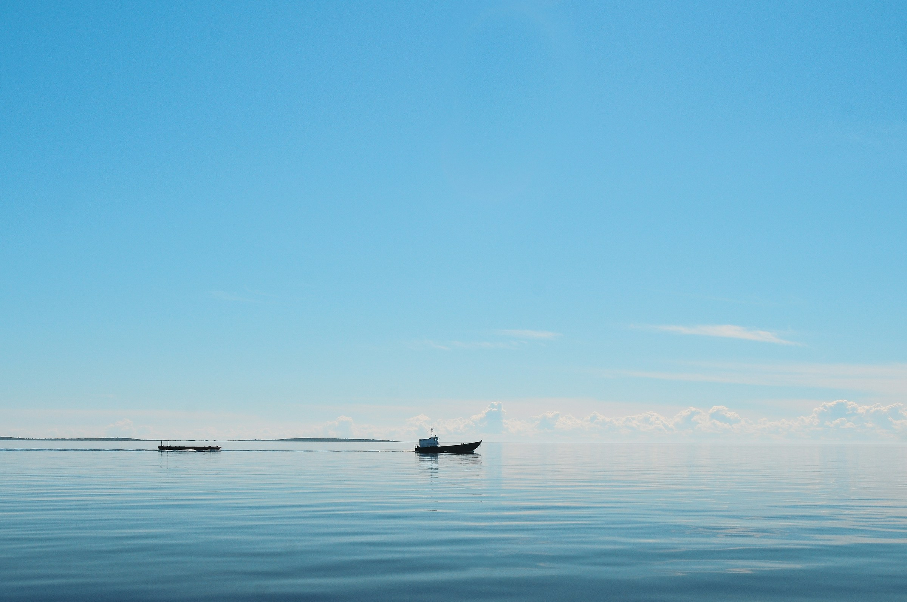
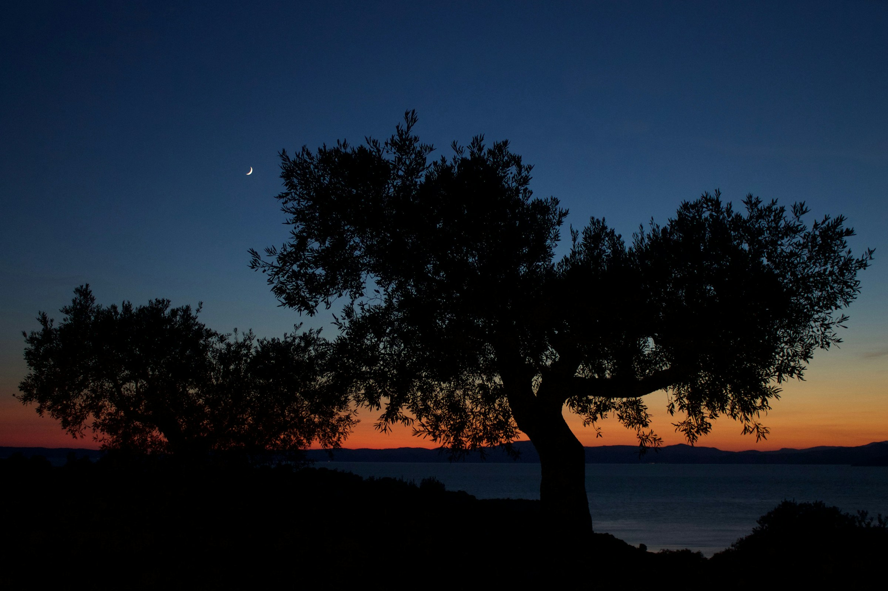

過ごし方
Experience
Four times a day.一日に四つの時。
朝、昼、夕、夜。Morning, day, evening, night.
一日のなかに、四つの時間があります。There are four times within a day.
それぞれの時間に、ひとつずつの過ごし方を。For each, one way to spend it.

朝 / MorningMorning / 朝
Morning calm boat tour.
朝凪のボートツアーMorning calm boat tour
5時半、舟屋に集合。朝もやの中、舟で島の北側へ。Meet at Funaya at 5:30. Through the morning mist, we head north of the island by boat.
風も波もない、最も静かな水面に出ます。帰港後、朝餉の間で朝食を。Out onto the stillest water, where there is neither wind nor wave. Upon return, breakfast in Asage-no-ma.
昼 / DayDay / 昼
Island cycling.
島内サイクリングIsland cycling
漣で用意する自転車で、島の小道を。Take to the island paths on bicycles we provide.
棚田跡、雑木林、小さな鎮守、漁港跡。一周およそ8キロ、所要約2時間。Former rice terraces, wild groves, a small shrine, the remains of an old fishing port. About 8 km in a loop, around 2 hours.
夕 / EveningEvening / 夕
Sunset hour at the lounge.
夕陽のラウンジタイムSunset hour at the lounge
凪の間で、夕陽を待つ時間。Time spent at Nagi-no-ma, waiting for the sunset.
瀬戸内の地酒一杯から始まります。夕陽が沈みきると、自然と人が黙ります。Begin with a single cup of local sake from the Seto. As the sun finishes setting, voices fall silent of their own accord.

夜 / NightNight / 夜
Moonlit meditation by the waves.
月夜の波音瞑想Moonlit meditation by the waves
月のある夜のみ、桟橋の先端で30分。Only on nights with a moon: thirty minutes at the end of the pier.
月の光と波の音だけ。漣のスタッフがガイドします。Only moonlight and the voice of the waves. A Sazanami staff member guides you.

通年 / Year-roundYear-round / 通年
Workshops of the season.
季節のワークショップWorkshops of the season
春は柑橘の蒸留、夏は塩づくり、秋は書、冬は薪火。Spring brings citrus distillation; summer, salt-making; autumn, calligraphy; winter, the wood fire.
月により2〜3種類を開催しています。Two or three workshops are held each month.